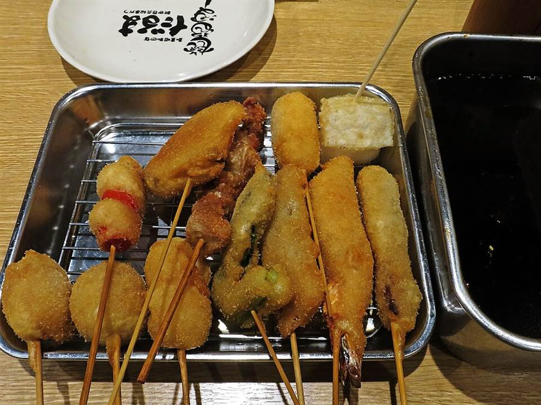

Giorno 6 di 15 · Martedì 8 dicembre · Osaka
Osaka #2: Kuromon, Den Den Town e Shinsekai
📌 In sintesi
- Mattina colazione al Mercato Kuromon, granchio e ricci.
- Pomeriggio Den Den Town, l'Akihabara di Osaka.
- Sera Shitenno-ji, Shinsekai e il kushikatsu.
🕘 Itinerario della giornata
- 08:30Kyoto → Osaka — oggi si scende a Namba, quindi conviene partire da sotto l'hotel: Hankyu da Omiya a Osaka-Umeda col limited express, ~45 minuti e ~410 yen, poi la metro Midosuji fino a Namba. In alternativa il JR Special Rapid da Kyoto Station, 29 minuti fino a Osaka Station — ma prima dovete arrivare in stazione. Tutto con la ICOCA.
- 09:30Mercato Kuromon Ichiba — 580 metri di galleria coperta, 150 banchi, e a differenza di Nishiki qui si mangia sul posto: molti banchi grigliano capesante, granchio, wagyu e ricci di mare sul momento e hanno due sgabelli o un tavolino accanto alla piastra. Questa è la vostra colazione.
- 11:00Den Den Town (Nipponbashi) — cinque minuti a piedi a sud del mercato. È l'Akihabara di Osaka: elettronica, retrogaming, modellismo, manga usati. Meno luccicante e molto meno battuta dai turisti, il che di solito vuol dire prezzi migliori sull'usato.
- 11:30Super Potato Nipponbashi e Retro-Game Camp — cartucce Famicom e Super Famicom sciolte, console testate, accessori. Qui il retrogaming costa meno che ad Akihabara perché non c'è la stessa pressione turistica.
- 12:15Surugaya, Jungle e Animate Nipponbashi — usato e nuovo su più piani: figure, dojinshi, carte, giochi. Surugaya ha spesso i bin con la roba senza scatola a poche centinaia di yen. (Il Mandarake Grand Chaos di Osaka non è qui ma ad Amerikamura, che avete visto sabato al Giorno 3.)
- 13:15Pranzo in zona Nipponbashi.
- 14:15Shitenno-ji — un quarto d'ora a piedi verso sud-est. È il primo tempio buddista ufficiale del Giappone, fondato nel 593 d.C. dal principe Shotoku: la pagoda a cinque piani e il giardino interno sono una parentesi di silenzio totale fra il quartiere dell'elettronica e i neon di Shinsekai. Ingresso al recinto gratuito, 300 yen per il giardino.
- 15:15Shinsekai — quindici minuti a piedi verso sud-ovest. Il quartiere costruito nel 1912 immaginando la Parigi e la Coney Island del futuro, poi rimasto congelato negli anni '60. Insegne enormi, pesci gonfiabili, statue di Billiken. È il posto più "vecchia Osaka" che vedrete.
- 15:45Torre Tsutenkaku — 103 metri, l'osservatorio al quinto piano più una piattaforma esterna. La cosa migliore però è lo scivolo Tower Slider, che scende in spirale attorno alla torre in dieci secondi.
- 16:45Janjan Yokocho — il vicolo coperto ai piedi della torre, lungo 180 metri: tavoli di shogi in strada, bar dove si beve alle tre del pomeriggio, kushikatsu ovunque. Le insegne si accendono proprio adesso.
- 17:30Spa World (opzionale) — enorme complesso termale con piani a tema europeo e asiatico, a due passi. 1.500 yen, e dopo cinque giorni di camminate è il modo migliore di passare un'ora.
- 19:00Cena a Shinsekai — kushikatsu, con la Tsutenkaku illuminata sopra la testa.
🗺️ La mappa del giro
🍜 Dove mangiare

- ColazioneKuromon Ichiba — capesante grigliate al momento, uni su un cucchiaio, spiedini di wagyu. Si mangia fermi accanto al banco, in piedi o sugli sgabelli, 300-1.500 yen a porzione.
- CenaKushikatsu Daruma a Shinsekai, la casa madre dal 1929. Prendete il set misto e poi aggiungete asparago, maiale e formaggio. La salsa è in comune e non si intinge due volte.
- Di stagioneda ottobre a marzo è periodo di fugu, e Shinsekai è storicamente il quartiere dove si mangia. Cuochi con licenza statale, nessun rischio reale.
💡 Note e dritte
La logica della giornata: è una linea dritta verso sud — Kuromon, Den Den Town, Shitenno-ji, Shinsekai stanno tutti su un asse di tre chilometri e si fanno interamente a piedi. Osaka sud è il lato popolare e un po' sgangherato della città: rumoroso, ipercalorico, per niente elegante. È il contrario esatto sia di Kyoto sia della Osaka lucida di sabato.
Den Den Town è la vostra prima giornata nerd, e vale la pena farla con calma: i prezzi dell'usato qui sono mediamente più bassi di Akihabara, quindi se vedete una cartuccia o una figure che cercate da tempo, prendetela adesso invece di sperare di ritrovarla a Tokyo. Le regole su come si legge lo stato della merce usata sono nella sezione 🕹️ Nerd shopping.
Kuromon come colazione, non come pranzo. I banchi aprono verso le 9 e i migliori esauriscono il pesce buono entro mezzogiorno. Arrivare alle 9:30 significa mangiare bene, spendere meno e non fare fila.
Sul kushikatsu, una regola sacra: ogni tavolo ha una vaschetta di salsa in comune, e non si intinge due volte (ni-do zuke kinshi). Se vi serve più salsa, usate un cavolo crudo come cucchiaio. È l'unica regola di galateo che a Osaka prendono davvero sul serio.